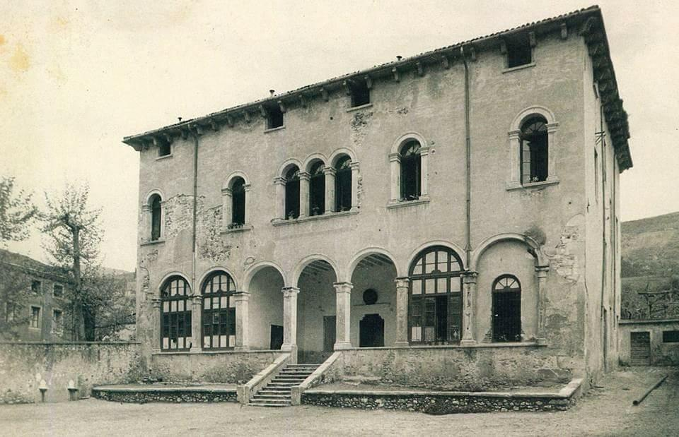
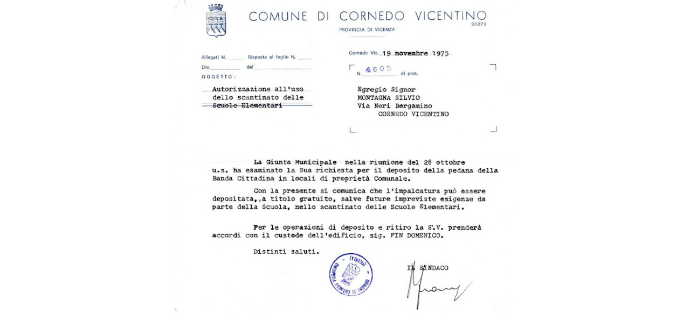
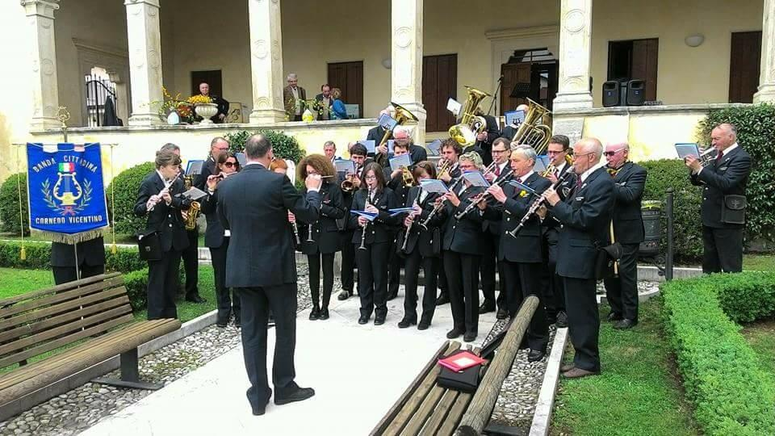
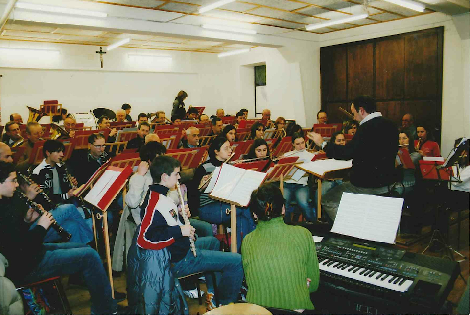
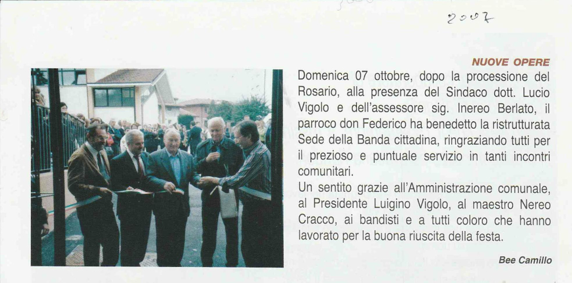
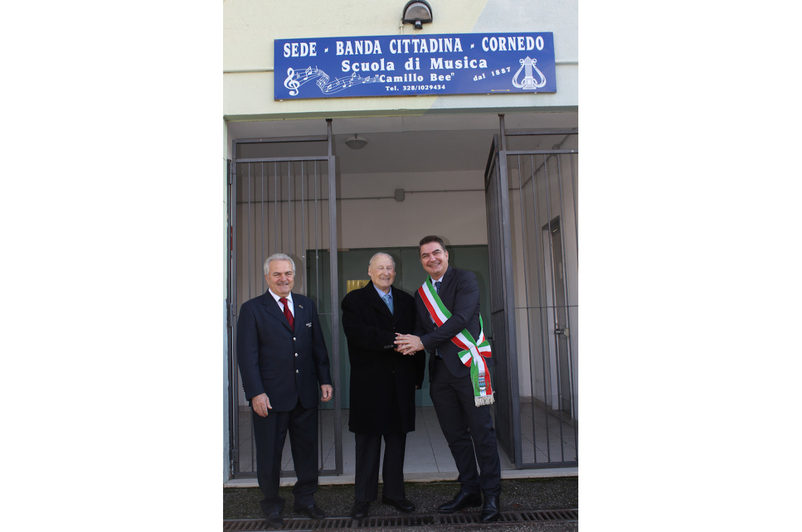

Aenean ornare velit lacus, ac varius enim lorem ullamcorper dolore aliquam.
La storia delle sedi
Secolo XIX
Non abbiamo documenti su come e dove tenessero le prove e il materiale, gli strumenti e gli spartiti, ma pensando che sia il maestro che il presidente della Banda nella seconda metà del secolo, erano entrambi all’interno dell’amministrazione comunale, possiamo ipotizzare che il comune concedesse qualche locale di sua proprietà all'attività musicale.
Può anche essere che fossero ospitati in scantinato o rimessa di qualche Villa o palazzo di famiglia benestante… d'altronde chi aveva modo di poter studiare musica, erano appunto i membri delle famiglie più possidenti.
Inizio XX secolo e tra le due guerre
Da un articolo di giornale, sappiamo che fino agli anni ’40 la sede era nello scantinato “La Galleria” di casa Pretto. Il comm. Pretto Giuseppe Alberto eredita dal padre la Villa che a suo tempo era stata acquistata dalla famiglia Gonzati (poi chiamata casa Pretto, attuale Municipio) e il parco adiacente (ora Parco Pretto). La ristruttura e ci abita nei periodi in cui viene a Cornedo in villeggiatura. Pur seguendo gli affari commerciali e industriali a Genova, rimane molto legato a Cornedo, intratteneva buoni rapporti con le famiglie Trettenero e Arena. Segue da vicino molte iniziative della vita culturale ed educativa del paese. Spesso aiuta le associazioni cornedesi anche finanziariamente. Quindi è verosimile il fatto che abbia lasciato usare lo scantinato della Villa per le prove della Banda.
Subito dopo la Seconda Guerra Mondiale
Durante la Seconda Guerra Mondiale gli strumenti sono stati custoditi in un locale del dopolavoro di Cornedo, che era un bar/osteria, con annessa una sala superiore, nel caseggiato a fianco della Villa Trissino, dove ora si è allargata la Cooperativa di Consumo.
Subito dopo la seconda guerra mondiale, sono stati tolti gli strumenti dalla soffitta e si provava a ritrovarsi in un locale di una vecchia casa, situata in fondo alla stradina tra l'attuale studio di architettura e il negozio a fianco, più o meno dietro la Gelateria della piazza. La stanza è veramente un povero scantinato, con un trave di traverso che puntella il soffitto e la rio che allaga l'interno ogni volta piove un po' più abbondantemente. Tra i suonatori ci sono vari falegnami di professione, che producono una serie di panche da mettere tutt'intorno alle pareti, per potersi sedere.
La voglia è tanta, ma i soldi pochi e al momento devono accantonare i progetti musicali, almeno per qualche anno.
Dal 1956
Verso la metà degli anni ’50, ottengono dall'amministrazione comunale, l'uso di un'aula della Villa Trissino, dove nonostante le condizioni del "Palazzon" lasciassero piuttosto a desiderare, era ospitata la scuola Elementare.
Al momento della ricostituzione del Risorto Corpo Bandistico del 1956/1957, i bandisti quindi avevano trovato una sede, una stanza nella parte ovest dell'edificio, con le finestre che davano sul cortile della cooperativa, l’aula di una ‘quarta elementare'
Nel 1956 acquistano taffettà per l’arredamento, riparano la luce, acquistano chiavi e lucchetto e danno il colore ai leggii. L'anno seguente riparano la ‘stuffa', riparano un ‘legio da programma’ (leggio da servizio, cioè per concerti e/o uscite musicali). Dall'anno 1957 nei bilanci appare la voce "compenso a bidello", che provvedeva a tenere chiusi a chiave nell'aula strumenti e materiale vario, e ad accendere la stufa prima delle prove. Uno dei ricordi è appunto il bidello, in maniche di camicia e con la giacca piegata e appoggiata ad una spalla, giacca mai vista indossata, che si accingeva ad accendere la vecchia stufa.
Nel 1957 acquistano anche un telone con l'incisione “Corpo Bandistico“.
Le lezioni dei giovani aspiranti bandisti venivano fatte da Angelo Pincer direttamente a casa sua, molti lo ricordano, almeno fino agli anni sessanta, quando ancora insegnava direttamente ai ragazzi.
Le riunioni del Comitato però avvenivano nei bar del paese, alternando ora uno ora l'altro, questo probabilmente dovuto al fatto che si ritrovano in serata e cercano un locale caldo e confortevole, non ultimo il fatto che si poteva approfittare dell'occasione per bere un buon bicchiere di vino.
Nel 1959 entra in funzione la nuova scuola elementare costruita in località Mazzalovo, mentre la sede e la scuola di musica rimangono a Villa Trissino ancora per un po' di anni.
È doveroso fare una precisazione, in quegli anni Villa Trissino era piuttosto malmessa. La ristrutturazione della fine del 1800 (1880/82) che l'aveva riportata agli antichi splendori, seppur con un intervento di consolidamento nel 1907, aveva dovuto fare i conti con due guerre mondiali, con l'occupazione dell'edificio da parte dei soldati italiani/francesi/inglesi nella Grande Guerra che provocarono numerosi e gravi danni. Nella seconda Guerra Mondiale fu occupata dai soldati tedeschi che distrussero una parte degli arredi. Poi l'uso scolastico intensivo, che ha visto la frequenza fino a 430 allievi nello stesso anno scolastico rendendo necessario fare 2 turni nella stessa giornata, completòl'opera di disfacimento.
Insomma la situazione di Villa Trissino fino al 1961 circa era veramente critica, e fare le prove serali nella stagione più fredda non doveva essere stato molto confortevole. D'altronde il Corpo Bandistico poteva solo che ringraziare se l’amministrazione comunale lo ospitava, e la grande passione per la musica faceva superare anche questi disagi.
Nel 1962 Villa Trissino viene ristrutturata per ospitare le aule della scuola media, che rimarrà in questa sede almeno una decina d'anni, anche se i lavori sono soprattutto rivolti a ricavare più aule possibili, utilizzando anche il sottotetto. Lavori che però non riportano la Villa alla sua antica dignità.
Nel 1964 il Comitato direttivo vede di cercare di sistemare meglio la sede, chiede al Cav. Giuseppe Pozza se può cedere armadio e banchi dismessi della "Scuola di Disegno", vengono acquistati nuovi leggii, ma soprattutto il presidente Cavedon comincia ad interessarsi per una nuova sede della Scuola di Musica.
Fra il 1970 e il 1975 anche gli alunni della Scuola media si trasferiscono in un nuovo edificio costruito accanto alla nuova scuola elementare e lasciano definitivamente il "palazzon", ormai in uno stato pietoso.

In questa foto del Palazzo Trissino si nota la chiusura di parte del porticato per ricavare aule studio.
La svolta del 1975

È a questo punto che anche il "Corpo Bandistico" ottiene l'autorizzazione ad utilizzare lo scantinato del nuovo edificio delle scuole elementari.
Il 28 ottobre 1975 il Comune di Cornedo autorizza la Banda Cittadina (ora chiama così) a depositare la pedana che utilizza per le prove, ”a titolo gratuito, salve future esigenze da parte della Scuola”.
Villa Trissino viene definitivamente liberata da aule e alunni, dopo qualche anno verrà completamente ristrutturata e utilizzata per ospitare la Biblioteca comunale, ma questa è un’altra storia.
Ancor oggi comunque la Banda Cittadina rimane legata alla bella Villa Trissino, dato che la prima foto storica della "Banda Musicale di Cornedo" è stata scattata nel 1887 sugli scalini della facciata risistemata con la ristrutturazione del 1882. E appena possibile, torna a risistemarsi sulla stessa scalinata per essere nuovamente immortalata in una nuova foto.

La nuova sede
Dunque nel novembre del 1975, finalmente, la Banda Cittadina ebbe una nuova sede. Nello scantinato delle scuole elementari, dove si trova ancora oggi.
La sede inizialmente occupava un terzo dell'attuale sala prove, ma già le condizioni erano migliori rispetto alla seďe precedente. la pedana in legno venne risistemata e si creò un palco su tre livelli con i leggii fissi per ospitare comodamente i suonatori. Anche il riscaldamento era assicurato, dato che i tubi del riscaldamento della scuola elementare passano proprio adiacenti al soffitto dello scantinato e non essendo, all'epoca, isolati fungevano da termosifone in maniera più che soddisfacente. Attualmente come riscaldamento in sede si usa lo stesso sistema, anche se con le sucessive modifiche fatte per il risparmio energetico i tubi sono stati isolati. Una piccola parte ma comunque sufficiente di questi tubi è stata lasciata appositamente scoperta proprio per fornire il riscaldamento alla "scuola di musica".
Anni dopo si ottenne il permesso di ampliare la sede fino al secondo pilastro; venne fatto spostare il muro divisorio. Fu fatta installare una porta chiusa per accedere ad una stanza nel retro che fungeva da magazzino. Il resto dello scantinato era a disposizione della "Fiera dell'artigianato", ente presieduto da Vigolo Luigino, ed era usata come deposito.
La pedana venne risistemata, allungata e rimessa a nuovo usando circa la metà dello spazio aquisito. L'altra metà fu dedicata a magazzino. tra la pedana ed il magazzino c'era un dislivello di circa un metro dovuto al fatto che la pedana, come detto in precedenza era su tre livelli. C'era una scala in legno che permetteva il passaggio al magazzino e per evitare che i suonatori cadessero accidentalmente, alla fine della pedana venne fissata una balaustra (che attualmente è ancora in sede e divide l'ingresso dallo spazio dedicato agli strumentisti). Poi venne fissato un pesante telo color verde che fungeva da parete divisoria tra la sala prove ed il magazzino.
Dopo pochi anni si riusci ad ottenere ulteriore spazio e cosi venne spostato il magazzino ed allungata ancora la pedana occupando per intero la parte che in un primo momento era adibita a magazzino. Nonostante tutti questi lavori in quegli anni il numero dei bandisti e degli allievi era veramente importante ed in espansione. In poco tempo la sala tornò ad essere di nuovo stretta.

Questo fu il risultato dopo i vari interventi
La sede come è adesso
Nel 2007 vengono ampliati e rinnovati i locali del seminterrato della Scuola Elementare che fungono da sede, viene abbattuto il muro divisorio e la stanza acquista le dimensioni odierne. La Banda in questo momento ha un considerevole numero di bandisti senior (circa 40), a cui si aggiungono una cinquantina di ragazzi che hanno dato vita ad una Junior Band.
Oltre ad una sala prove più grande, viene ricavata una stanza ad uso ufficio e archivio, che comunica con una stanzetta ad uso magazzino, e sull'altro lato, un’aula per le lezioni individuali e di solfeggio.<
Viene definitivamente tolta la pedana di legno, sostituita con della moquette a coprire il pavimento.
A questo punto la sede è pressoché completa, viene dotata anche anche di un impianto di climatizzazione per le prove estive. A fine agosto c'è sempre uno dei maggiori concerti dell'anno, quindi le prove d'estate non si fermano

L'articolo apparso su "Cornedo in dialogo"
Il 20 Novembre del 2016 la "Scuola di Musica" viene intitolata a Camillo Bee. L'intitolazione proposta dal consiglio direttivo è stata avallata dall'amministrazione comunale ed ufficializzata dal Sindaco Martino Montagna in occasione della festa di Santa Cecilia.
Nel 2018 viene fatto un lavoro di insonorizzazione ad opera di una ditta specializzata con dei pannelli sulle pareti e a soffitto, su progetto approvato e finanziato dalle casse comunali.
